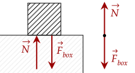
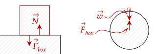
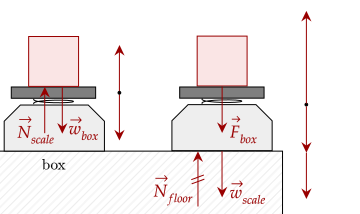
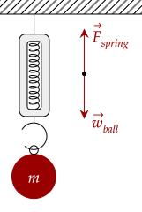
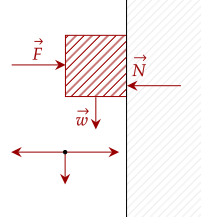

How do scales measure our weight? Why do we not phase through walls? Why doesn't anything phase through the Earth?
To answer these questions, we introduce a new force, that stops things from going through each other.
The normal force occurs as a consequence of the Law of Interaction. Recall the example of a box sitting on the floor. As it pushes on the floor, the floor pushes back to keep it at rest (by Newton's first law). This force pushing back is called the normal force.

The above figure shows the action-reaction pair that the normal force is part of. You may be inclined to believe that the force of the object pushing on the floor is the weight of the object; both pull down on the object.
This is an incorrect conclusion. While there are other reasons why this isn't the case, here is one: they are parts of different action-reaction pairs. The force of weight is part of the action-reaction pair involving the box and the Earth; not the box and the floor.

However, on a flat, non-accelerating horizontal surface, it is true that the weight and the normal force acting on an object is equal in magnitude, by Newton's first and second law. Since the object is at rest, we can equate both of them, setting the net force as zero.
How can we use this fact? Since the normal force is equal to weight (on a flat non-accelerating horizontal surface), if we can measure this normal force, we can get our weight. Thankfully, we can.
While the discussion of how we can do this is postponed until dealing with oscillations (as it involves springs and

Let's break down the above figure. The left side shows the forces acting on the box. We have the weight of the box, which is counteracted by the normal force of the scale.
The scale side shows three forces; the weight of the scale, the force of the box on the scale, and the normal force of the floor keeping the scale at rest.
A scale measures the normal force of the scale on your feet.
You may have noticed the repetition of the term "non-accelerating horizontal surface". The first part of this statement is "non-accelerating". If you stood on a scale while accelerating, by Newton's second law, there is a net force acting on you.
Using the definitions for force and weight given by the Law of Acceleration, we have this equation.
Thus, it can be seen that weighing yourself on an accelerating surface will mess up the reading of your scale.
Let's analyze each case. Case A and case E both are non-accelerating by Newton's first law. Case C has a positive acceleration, while case D has a negative acceleration. Case B has its acceleration as the gravitational acceleration.
First of all, let's eliminate case A and E; they are baselines, and the reading can go higher of lower. Looking at case C with a positive acceleration, it is the same as this equation.
Thus, the reading on the scale would be a little higher than if she was stationary. For case D, the acceleration is negative, so it would look like this.
The magnitude of acceleration then decreases the normal force, which decreases the reading. For example, if it were accelerating downward at 1m/s², the normal force would be a little lower.
Finally, in free fall, the downward acceleration is equal to our gravitational acceleration, so the normal force is practically zero.
This gives us our answer. The minimum reading is attained in free fall, at case B, and the maximum reading is attained when the acceleration goes up, at case C.
This is one way to measure weight. Another way is by using a spring scale, in which an object is attached to one of its ends and the weight pulls a spring down, which is where it reads your weight.

This time, the force of the spring is the one that is being measured, pulled on by the weight. Just like a normal scale, the spring scale is also prone to breaking in an accelerating environment.
Let's analyze each case once more. Case A and case B both are non-accelerating by Newton's first law. Case C and D is both accelerating, but in different directions.
Case A and B will give the true value as it isn't accelerating. Case C has deceleration, with the acceleration being positive; the elevator is going down, but is slowing down, thus the acceleration is opposite of the velocity. At a positive acceleration, we saw the scale shows a higher reading; the same is true with this spring scale.
Case D has a negative acceleration, pointing downwards. The same logics applies here; the scale showed a decrease in the reading, thus the same occurs for the spring scale. Thus, the maximum reading is in case C, and the minimum reading is case D.
The spring scale gives us that the weight of the object is 65N. In the first scenario, there isn't any acceleration, so there isn't any variation; still 65N.
On the other hand, the second scenario has an acceleration, pointing downward. This is because it decelerates the upward velocity, and thus it is opposite to the velocity. By our intuition, this means the reading is a little lower.
We first need the mass of the object, which is simple enough to get.
Now, we plug in our values.
Giving us the reading is about 49N.
You may have played with a scale before and realized that if you push hard on the scale, the reading increases, while if you push a little weaker, the reading decreases. This shows one property of the normal force.
The normal force is lazy. It only has as much strength as needed to keep the object from going through each other.
The scale reads the normal force on the object. Setting the weight as negative, we note three forces; the normal force, the weight, and the pull that you apply.
The weight is simple enough. We note that the current pulling force is less than the weight, and thus it won't go up yet. The box is still at rest, so the net force is zero. We solve for the normal force.
Giving us the current normal force is 29N, so the reading is 29N. To have the scale be reading zero, the normal force must be zero. The minimum force then is when the box is about to accelerate upwards; still net force is zero.
Giving us we must pull at a strength of 49N.
With the normal force, we can feel our weight. We know that weightlessness is the feeling that we have no weight. Thus, if we somehow remove the normal force, we will feel weightless.
Here is one way to feel weightless. Bend your legs, then jump. As you jump you lose contact with the ground; this means the only force acting on you is basically your weight, which you can't feel since it has nothing to react to. Thus, you feel weightless.
Another option is to go inside an elevator and ask your friend to cut the cable. As the elevator accelerates at the same speed as you are falling, your contact with the floor is cut off; you are basically floating now.
On the high dive, you feel the force of gravity because of the normal force which pushes up on you as you push on the high dive. While free falling, there isn't any force to push up on you; you don't feel your weight.
We leave the second part of this question to the most omniscient reader.
You may wonder what the "normal" in the normal force means. To put it simply, the "normal" of a surface is a vector pointing perpendicular to the surface. In other words, the normal force always points perpendicular to the surface to which the object is in contact with.
Thus, it is wrong to assume that the normal force always points up. In fact, it can point in any direction. If you push a block against a wall, the normal force will push back on the box to keep it from passing through. This demonstrates that the normal force isn't always upward.
